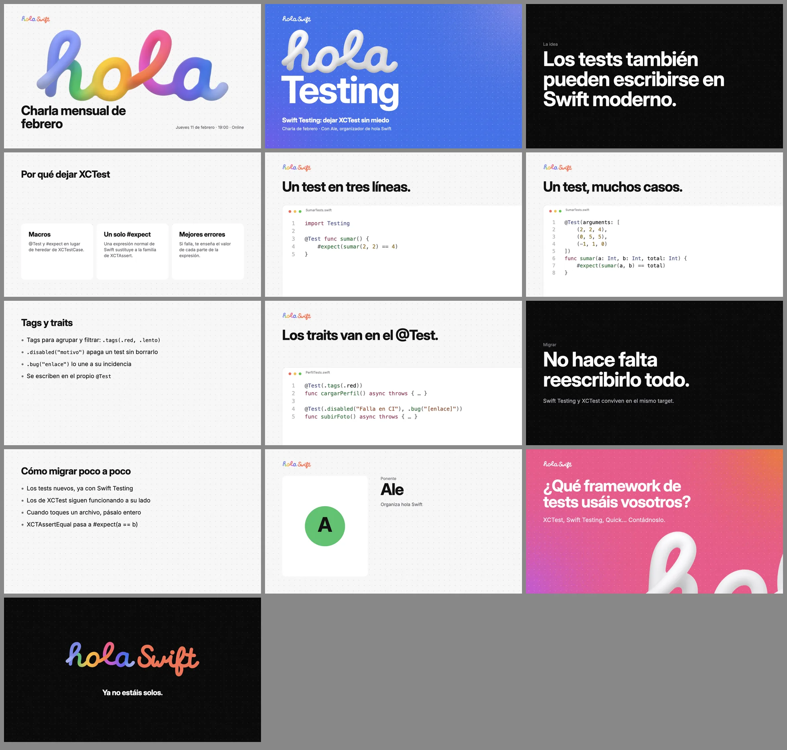
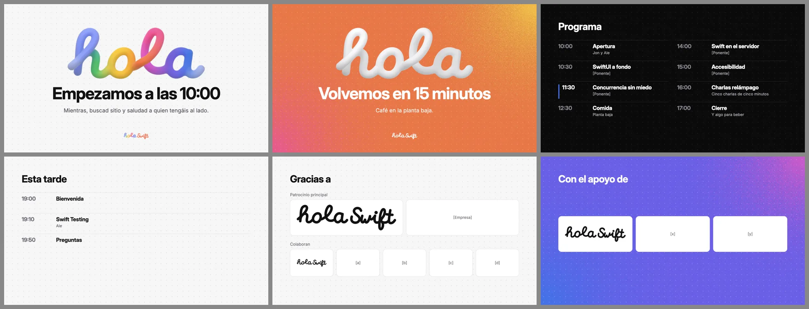

Ponentes
Presenta con hola Swift.
¿Vas a dar una presentación en hola Swift? Pídele a Claude las diapositivas con la marca y edítalas después en Keynote, PowerPoint o Google Slides.
Tres pasos para empezar.
Solo la primera vez. Después basta con pedirle a Claude lo que necesitas.
-
Instala las fuentes
Descomprime el ZIP, abre cada archivo con doble clic y pulsa «Instalar». Son Inter e Inter Display, con licencia libre. Sin ellas, Keynote y PowerPoint ponen otra parecida.
Descargar fuentes -
Añade la skill a Claude
En claude.ai (web o app): Ajustes › Capacidades › Skills › Subir skill y elige
holaswift-presentaciones.skill. Tiene que estar activada la ejecución de código.¿Usas Claude Code? Instálala con un comando
Escribe esto en Claude Code (terminal o pestaña Code de la app). Se actualiza sola desde GitHub:
/plugin marketplace add holaswift/presentaciones /plugin install presentaciones@holaswiftPara recibir las mejoras:
/plugin› Marketplaces ›holaswift› actualización automática.Descargar la skill¿Otro asistente? Codex, Gemini CLI, Cursor…
Con el instalador de skills (necesita Node.js):
npx skills add holaswift/presentacionesLa skill genera el
.pptxcon Python: la primera vez puede que haga faltapip install python-pptx pillow numpy. -
Pídeselo como a una persona
Cuéntale de qué va tu presentación, quién la da y cuándo. Te devuelve un
.pptxy su guion. Lo que no sepa lo deja[entre corchetes]para que lo completes.
Por ejemplo.
- «Hazme las diapositivas de la presentación de marzo sobre accesibilidad en SwiftUI con Lucía Gómez, jueves 11 de marzo a las 19:00.»
- «Prepara las pantallas de espera y el programa del encuentro.»
- «Mándame la plantilla para ponentes con el nombre de Lucía y el tema Accesibilidad.»
Qué sabe hacer.
14 tipos de diapositiva en tres temas: claro, oscuro y color. Para cambiar algo, pídele que edite el guion y vuelva a generarla.
- Presentación mensualPortada, «hola + tema», contenido, pregunta y cierre.
- Plantilla para ponentes invitadosCon huecos y notas que explican cada diapositiva.
- Pantallas del encuentro o del directoEspera, pausa, programa y logos de patrocinadores.
- Recap de una presentaciónSe exporta a PDF para LinkedIn o Discord.
- Presentaciones para patrocinadoresCon la marca y los datos de la comunidad.
Ejemplos.

